Located in the heart of Kampot town, Onederz Kampot offers the perfect blend of comfort and social connection. Opened in 2021, our highly-rated hostel features modern, privacy-focused dorms, comfortable private rooms, a large swimming pool, a relaxing garden area, and vibrant common spaces. Situated just minutes from the Old Market and Kampot's famous cafes, we're your ideal base for exploring Bokor Mountain, pepper plantations, the Secret Lake, and the unique charm of this riverside town. We're consistently praised for our friendly staff and great atmosphere.
Comfort & Connection
Your Space
Comfy Dorms
Private Rooms
Hostel Perks
Sparkling Pool
Common Areas
Bar & Restaurant
Complimentary Wi-Fi
Guest Services
24/7 Reception
Tours & Transport
Laundry Service
Scooter Rentals
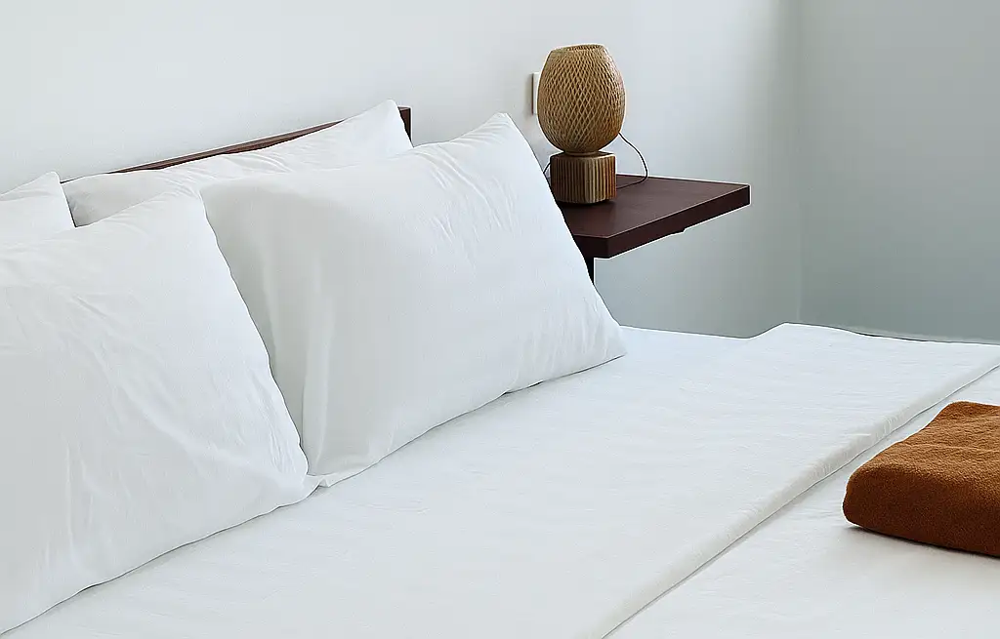
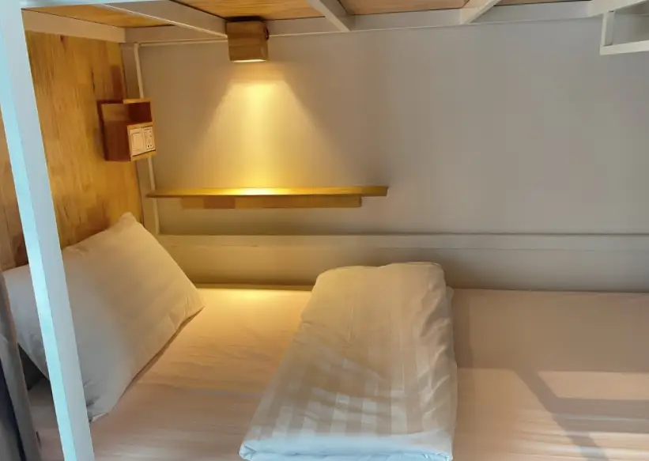
Sleep & Relax
Choose from our cozy mixed or female-only dorms featuring privacy curtains, individual power sockets, and reading lights, all with air-conditioning and large secure lockers. Or upgrade to a spacious private room with en-suite bathrooms, air-conditioning, TV, and complimentary toiletries. All options include free high-speed Wi-Fi.
Discover more
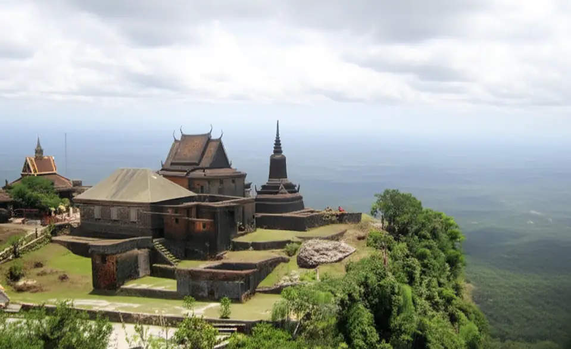
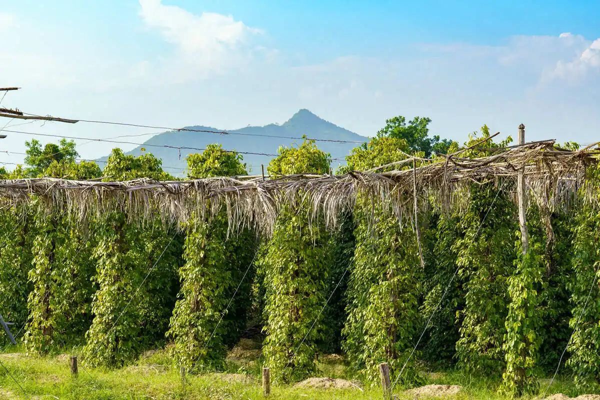
Your Journey in Kampot
Beyond our doors, discover the serene countryside, historic mountains, and vibrant local life of Kampot. From cultural explorations to exciting river adventures, there's always something incredible to experience!
Discover more
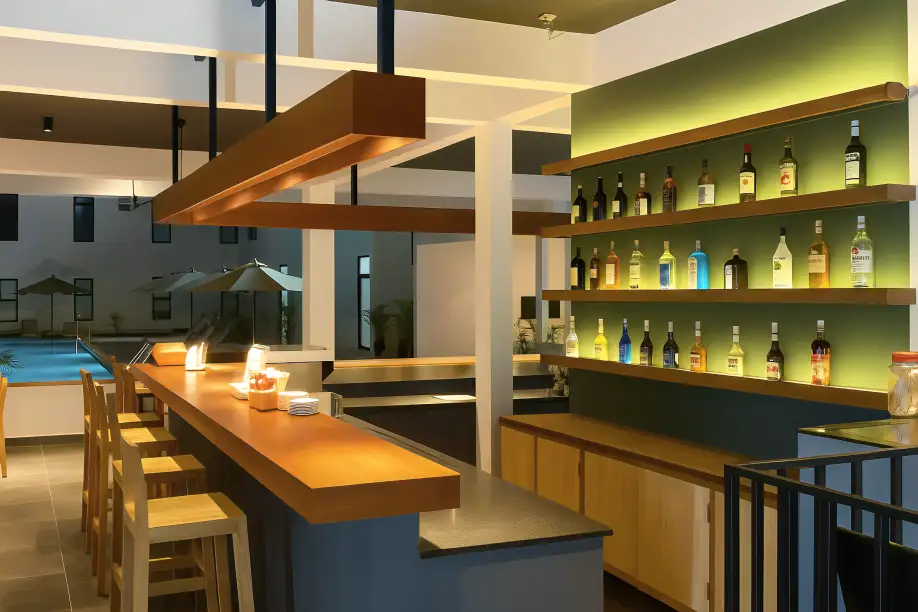
Eat & Drink
Our poolside restaurant and bar serves a wide variety of delicious and reasonably priced Khmer and Western dishes. Enjoy lively meals and easily connect with fellow travelers in our social space overlooking the pool.
Discover more
Our Location
Onederz Kampot is conveniently located in the town center, just a 3-minute walk from the Old Market and close to all major attractions. Our address: Street 724, Kampot, Cambodia.
Getting to Onederz Kampot: A Guide for Our Guests
Onederz Kampot is centrally located near the Old Market and riverside, providing easy access to the town's charm and attractions. Here's a detailed guide on how to reach us, whether you're arriving by bus/van or train:
I. From Bus/Van Stations›
Most long-distance buses and minivans will drop you off at or near the main Kampot Bus Station or at their specific company offices, which are usually quite central.
From the Main Kampot Bus Station / Central Drop-off Points:
Distance: Onederz Kampot is typically within 0.5 - 2 kilometers (0.3 - 1.2 miles) from the main bus station or most central minivan drop-off points.
Travel Time:
Walking: 5-20 minutes on foot, depending on your exact drop-off location and luggage.
Tuk-Tuk: 2-5 minutes.
How to Get Here:
Walk: If your luggage is light and the weather is pleasant, walking is a good option.
Tuk-Tuk: You will find many tuk-tuks waiting at the bus station and minivan drop-off areas. Agree on a price before starting your journey. It should be around $1 - $2 USD for a short ride to Onederz.
II. From Kampot Train Station›
The Kampot Train Station is located a bit outside the town center.
From Kampot Train Station:
Distance: Onederz Kampot is approximately 3-4 kilometers (1.8 - 2.5 miles) from the Kampot Train Station.
Travel Time:
Tuk-Tuk: 7-15 minutes, depending on traffic.
How to Get Here:
Tuk-Tuk: This is the most common and convenient way from the train station. You'll find tuk-tuks waiting. Always negotiate the price before you get in. Expect to pay around $3 - $5 USD.
General Tips for your arrival:
Currency: The local currency is the Cambodian Riel (KHR), but US Dollars (USD) are widely accepted everywhere. ATMs are widely available in Kampot town.
Onederz Contact: If you encounter any issues or need directions upon arrival, please don't hesitate to call us directly.
We look forward to welcoming your guests to Onederz Kampot!
The best rate guaranteed!! Book directly with us and get the best price now!
Comfort & Connection
×
Your Space
Comfy Dorms
Private Rooms
Hostel Perks
Sparkling Pool
Common Areas
Bar & Restaurant
Complimentary Wi-Fi
Guest Services
24/7 Reception
Tours & Transport
Laundry Service
Scooter Rentals
Dorms & Private Rooms
Whether you're looking to mingle and save, or prefer a tranquil retreat, our accommodations are designed to meet your needs. Our dorm rooms foster a vibrant community feel with cozy, private bunk spaces, while our private rooms offer a personal sanctuary complete with en-suite amenities. Both options prioritize your comfort with quality furnishings and essential features for a memorable stay.
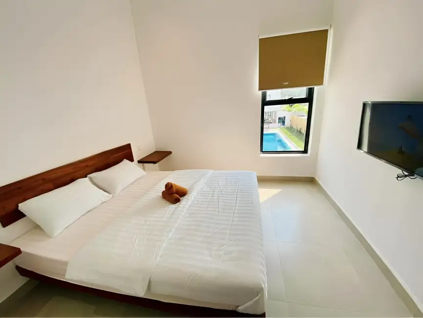
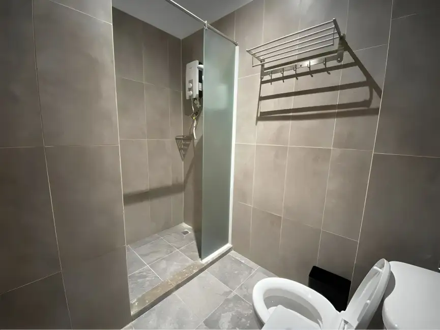
Double Room
Perfect for: Couples or solo travelers
A comfortable private room with a double bed, offering a peaceful retreat after exploring Kampot.
Max People: 2 | Private Bathroom | Free Wifi
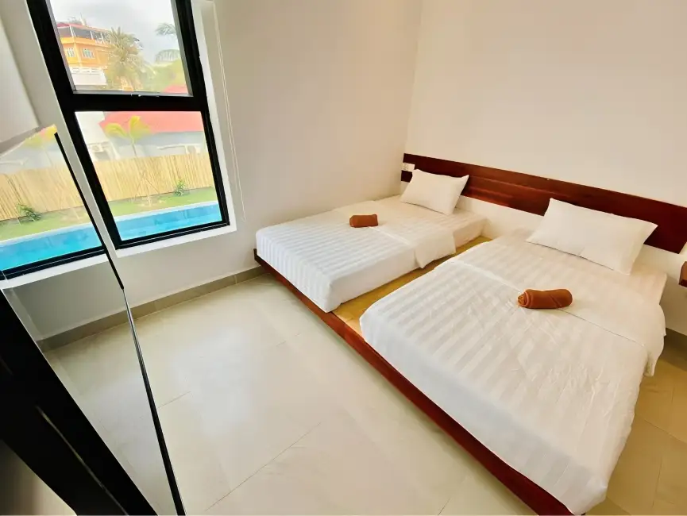
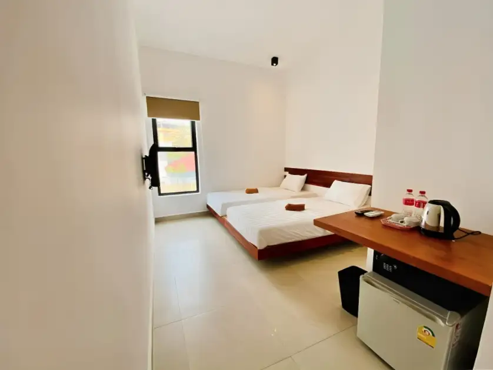
Twin Room
Perfect for: Friends traveling together
Features two comfortable twin beds, ideal for friends or travel buddies seeking a private space.
Max People: 2 | Private Bathroom | Free Wifi
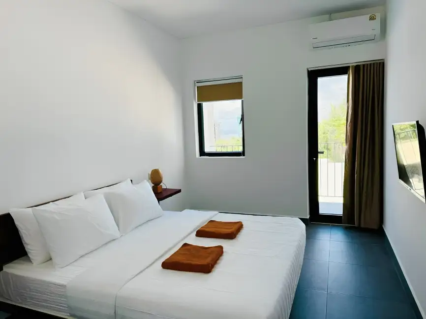
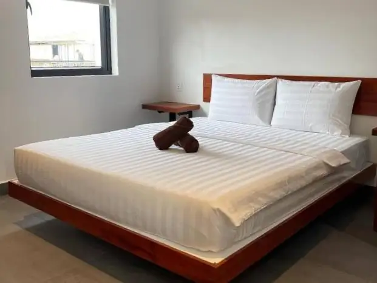
Double Room with Balcony
Perfect for: Enjoying the view
Relax in a comfortable double room featuring your own private balcony, perfect for enjoying the Kampot atmosphere.
A private room featuring one large bed and two single beds, ideal for groups or families seeking a comfortable and private space during their stay in Kampot.
Max People: 4 | Private Bathroom | Free Wifi
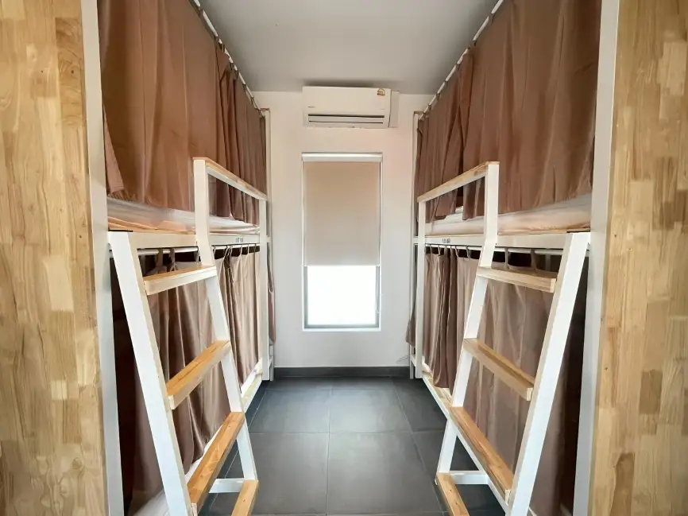
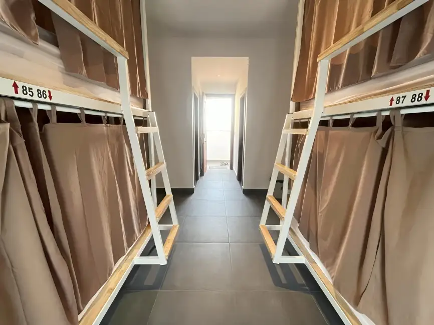
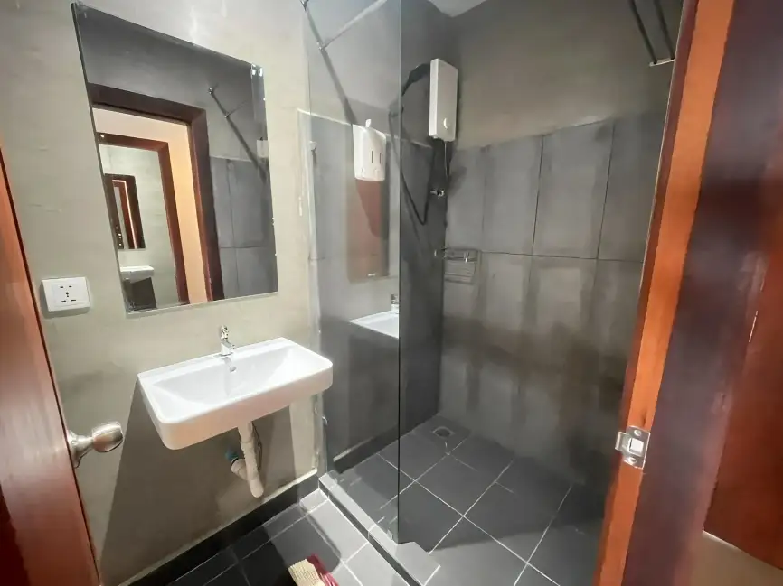
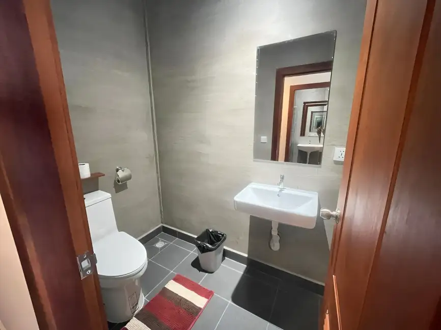
4 Beds Dorm with Private Bathroom
Perfect for: Intimate connections with extra privacy
Our cozy 4-bed dorm with the added convenience of an en-suite private bathroom. Ideal for solo travelers or small groups. *Available as Female Only or Mixed Dorms.*
Max People: 4 | Private Bathroom | Free Wifi
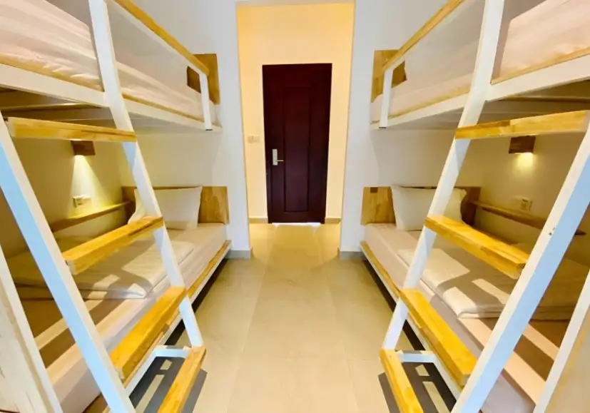
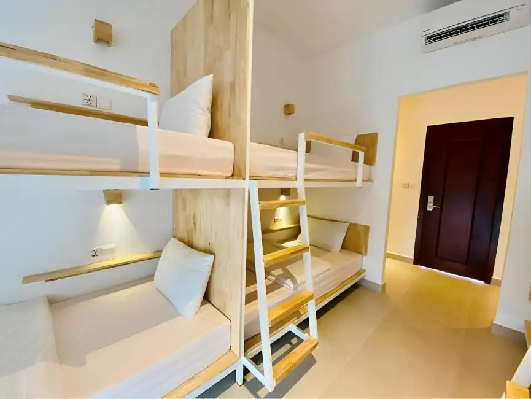
8 Beds Mixed Dorm
Perfect for: Socializing and meeting new people
A lively mixed dorm designed for making new friends and sharing travel stories. Features shared bathrooms located outside the room. *Available as Female Only or Mixed Dorms.*
Max People: 8 | Shared Bathroom | Free Wifi
Dorms: Connect & Unwind
We believe a great stay balances privacy with community! Our dorm rooms offer both, with bunk beds designed like cozy boxes that give you your own private space. Inside, you'll find everything you need: an electric socket, a reading lamp, and an accessory case. Even though we're a budget-friendly accommodation, we don't compromise on comfort; our mattresses, blankets, and pillows are as good as those in a hotel. Plus, all our rooms come with well-maintained air-conditioners and exhaust fans to keep you comfortable.
To ensure your peaceful sleep isn't disturbed, we've placed our shared bathrooms conveniently outside the dorm rooms. This means you can get all the rest you need to wake up refreshed and ready to connect with fellow travelers.
Keep your belongings safe and sound in our large lockers, measuring 40cm x 50cm x 80cm. We even provide padlocks if you don't have your own. So, you'll get two keys when you check in: one for your room door and another for your personal locker. We look forward to welcoming you and helping you make the most of your trip!
Private Room: Your Social Base
Discover the perfect balance of personal space and social opportunity in our private rooms. Each room is thoughtfully designed to be your comfortable base, featuring a refreshing air conditioner and peace of mind with your own electronic digital security box. We've included an electric kettle to kickstart your mornings, and bottles of water to keep you hydrated. Stay connected with loved ones or plan your next outing using our free Wifi, and enjoy the luxury of fresh towels and more.
Forget shared facilities! You'll love the convenience of your private bathroom right inside the room. With a clever partition wall and curtain separating the shower booth and toilet, you'll have all the space and privacy needed to get ready for a bustling day of sightseeing or to relax after a fun social evening.
Experiences
Onederz Kampot - Explore Our Adventures!
Discover the best of Kampot with our curated tours and activities. Whether you're into nature, history, or local culture, we've got something for you!
Our Top Picks:
Countryside Tour: Salt fields, pepper farms, ancient caves, and a visit to Kep!
Bokor Mountain Tour: Explore a colonial hill station, abandoned buildings, and waterfalls.
Cooking Class: Learn to cook 4 delicious Khmer dishes and 1 dessert.
Kayaking Tour: Paddle through Kampot's serene waterways.
Seafood Cruise: Enjoy fresh seafood while cruising the river.
For all tours, we offer both shared and private transport options to suit your preference and budget. Please inquire at reception for details!
Detailed Tour Information:
1. Countryside Tour
Join us to discover the heart of rural Cambodia!
Highlights:
Salt Fields: See how Kampot's famous salt is harvested.
Broteak Kro La Lake: A peaceful stop by the lake.
Phnom Chngok Cave: Explore an ancient cave temple.
Pepper Farm: Learn about the world-renowned Kampot pepper.
Kep City: A visit to the charming coastal town.
2. Bokor Mountain Tour
Step back in time on this fascinating mountain excursion.
Highlights:
Bokor Hill Station: Explore the historic French colonial ruins.
French Colonial Buildings: Discover the unique architecture.
Old Casino & Church: See these intriguing abandoned structures.
Waterfall: Enjoy the natural beauty of a cascading waterfall.
3. Cooking Class
A hands-on culinary adventure!
What you'll learn:
Prepare 4 authentic Khmer main dishes.
Create 1 delicious Cambodian dessert.
4. Kayaking Tour
Experience Kampot from the water. Perfect for nature lovers!
5. Seafood Cruise
Relax and enjoy the river views with delicious fresh seafood.
Important Note: For daily departure times, current pricing, and to book your spot, please speak to our friendly reception team. They are happy to help you plan your perfect Kampot adventure!
Eatery
Restaurant & Bar
Located conveniently on the ground floor near the bar, our restaurant and bar at Onederz Kampot offers a fantastic dining experience.
Open everyday
From 7:00 AM - 11:00 PM (night)
We're delighted to offer convenient and delicious dining experiences on the Ground Floor near the bar.
Opening Hours & Service
Our kitchens are open every day from 7:00 AM for all-day dining. You can enjoy our full menu, including breakfast, lunch, and dinner, throughout the day. The last food order is at 10:40 PM, and the dining area closes at 11:00 PM (night).
Your Dining Choices
You'll find a diverse menu to satisfy every craving. We offer a delicious selection of Asian and Western dishes, complemented by refreshing fresh shakes and juices, as well as a wide range of soft drinks, cocktails, beer, and wine. We look forward to serving you!
Onederz Kampot is conveniently located in the town center, just a 3-minute walk from the Old Market and close to all major attractions. Our address: Street 724, Kampot, Cambodia.
Good to know
×
Getting to Onederz Kampot: A Guide for Our Guests
Onederz Kampot is centrally located near the Old Market and riverside, providing easy access to the town's charm and attractions. Here's a detailed guide on how to reach us, whether you're arriving by bus/van or train:
I. From Bus/Van Stations›
Most long-distance buses and minivans will drop you off at or near the main Kampot Bus Station or at their specific company offices, which are usually quite central.
From the Main Kampot Bus Station / Central Drop-off Points:
Distance: Onederz Kampot is typically within 0.5 - 2 kilometers (0.3 - 1.2 miles) from the main bus station or most central minivan drop-off points.
Travel Time:
Walking: 5-20 minutes on foot, depending on your exact drop-off location and luggage.
Tuk-Tuk: 2-5 minutes.
How to Get Here:
Walk: If your luggage is light and the weather is pleasant, walking is a good option.
Tuk-Tuk: You will find many tuk-tuks waiting at the bus station and minivan drop-off areas. Agree on a price before starting your journey. It should be around $1 - $2 USD for a short ride to Onederz.
II. From Kampot Train Station›
The Kampot Train Station is located a bit outside the town center.
From Kampot Train Station:
Distance: Onederz Kampot is approximately 3-4 kilometers (1.8 - 2.5 miles) from the Kampot Train Station.
Travel Time:
Tuk-Tuk: 7-15 minutes, depending on traffic.
How to Get Here:
Tuk-Tuk: This is the most common and convenient way from the train station. You'll find tuk-tuks waiting. Always negotiate the price before you get in. Expect to pay around $3 - $5 USD.
General Tips for your arrival:
Currency: The local currency is the Cambodian Riel (KHR), but US Dollars (USD) are widely accepted everywhere. ATMs are widely available in Kampot town.
Onederz Contact: If you encounter any issues or need directions upon arrival, please don't hesitate to call us directly.
We look forward to welcoming your guests to Onederz Kampot!

 Comfy Dorms
Comfy Dorms Private Rooms
Private Rooms Sparkling Pool
Sparkling Pool Common Areas
Common Areas Bar & Restaurant
Bar & Restaurant Complimentary Wi-Fi
Complimentary Wi-Fi 24/7 Reception
24/7 Reception Tours & Transport
Tours & Transport Laundry Service
Laundry Service Scooter Rentals
Scooter Rentals